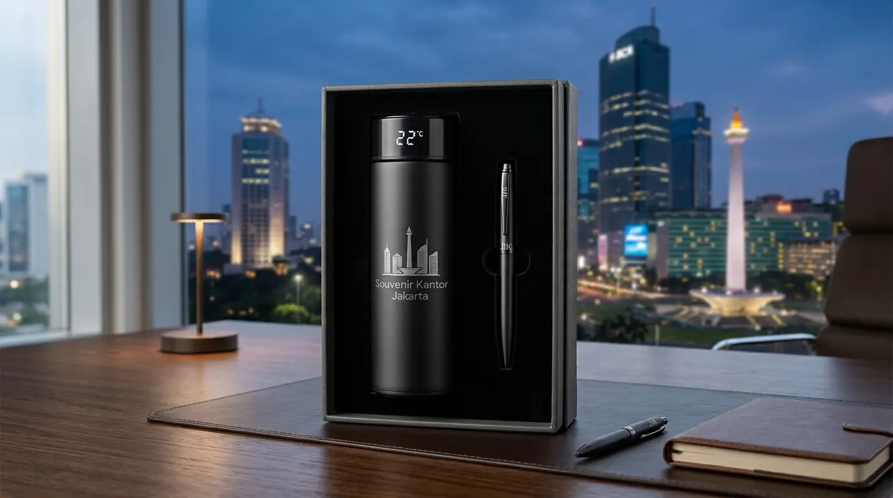

Tumbler Perusahaan Custom Logo untuk Souvenir & Promosi
 Tim Redaksi Souvenir Kantor Jakarta
26 Agustus 2026
8 Menit Baca
Tim Redaksi Souvenir Kantor Jakarta
26 Agustus 2026
8 Menit Baca
Tumbler perusahaan menjadi media promosi B2B paling populer karena memiliki tingkat penggunaan harian tinggi di lingkungan kerja. Material stainless steel insulasi vakum ganda (double-wall) mendominasi efektivitas promosi karena mampu menjaga suhu minuman hingga 12 jam. Kustomisasi logo menggunakan teknologi grafir laser memberikan hasil ukiran yang permanen, presisi, dan tidak bisa terkelupas. Pengadaan terpusat melalui penyedia grosir berpengalaman menjamin efisiensi anggaran operasional dan kepastian jadwal distribusi.
Tumbler perusahaan adalah wadah minum kustom berlogo instansi yang digunakan sebagai merchandise promosi, souvenir event, hadiah karyawan, dan corporate gift berdaya tahan tinggi.
- Mengapa Tumbler Perusahaan Menjadi Pilihan Utama Souvenir Promosi Korporat?
- Jenis Material Tumbler Perusahaan Apa Saja yang Paling Populer di Pasar?
- Teknik Cetak Logo Mana yang Paling Awet untuk Tumbler Perusahaan?
- Kesalahan Apa Saja yang Harus Dihindari Saat Memesan Tumbler Perusahaan?
- Pertanyaan Umum Seputar Tumbler Perusahaan (FAQ)
- Kesimpulan Praktis
Mengapa Tumbler Perusahaan Menjadi Pilihan Utama Souvenir Promosi Korporat?
Tumbler perusahaan menjadi pilihan utama souvenir promosi korporat karena menyajikan kegunaan praktis harian, usia pakai yang panjang, serta visibilitas logo yang sangat luas.
Berdasarkan Laporan Tahunan Pengadaan Merchandise Corporate Indonesia 2025/2026, penggunaan botol minum kustom sebagai barang promosi memberikan retensi ingatan merek (brand recall) hingga 89%. Angka ini jauh mengungguli media promosi cetak konvensional seperti brosur atau kalender kertas. Selain itu, tren gaya hidup sehat dan kampanye ramah lingkungan di area perkantoran mendorong peningkatan pemesanan tempat minum tahan panas-dingin secara signifikan.
Visibilitas Berkelanjutan
Logo terus terlihat setiap hariMendukung ESG
Ramah lingkungan, kurangi sampah plastikFleksibilitas Anggaran
Beragam varian materialBerikut adalah alasan strategis mengapa divisi pengadaan wajib mempertimbangkan produk ini untuk agenda bisnis:
- Visibilitas Brand Berkelanjutan: Logo perusahaan yang tertera pada permukaan botol minum akan terus terlihat di meja kerja, ruang rapat, hingga tempat umum.
- Mendukung Program ESG (Environmental, Social, and Governance): Penggunaan wadah minum berulang kali membantu meminimalkan sampah plastik sekali pakai di lingkungan kantor.
- Fleksibilitas Anggaran Pengadaan: Tersedia dalam beragam varian material, mulai dari plastik food-grade hemat anggaran hingga tipe termos eksklusif.

Jenis Material Tumbler Perusahaan Apa Saja yang Paling Populer di Pasar?
Jenis material tumbler perusahaan yang paling populer di pasar mencakup stainless steel SUS 304, plastik BPA-free, dan kombinasi bambu ramah lingkungan.
Memilih material yang tepat sangat menentukan kesan eksklusif dan daya tahan barang di tangan penerima. Menurut Data Asosiasi Industri Merchandise Indonesia (AIMI) periode 2025/2026, varian berbahan logam mendominasi 68% dari total pemesanan grosir untuk segmen korporasi.
Stainless Steel SUS 304
Insulasi vakum ganda, tahan panas 12-24 jam, cocok untuk grafir laser.
Plastik BPA-Free
Ringan, tahan banting, aman, dan ekonomis untuk skala besar.
Kombinasi Kayu Bambu
Estetika alami, citra ramah lingkungan dan sustainability.
Berikut adalah karakteristik utama dari masing-masing tipe bahan yang siap disesuaikan dengan kebutuhan acara Anda:
- Stainless Steel SUS 304 (Thermos Vacuum): Material logam tingkat pangan ini dilengkapi lapisan insulasi hampa udara yang mampu menahan suhu panas atau dingin hingga 12-24 jam. Permukaannya sangat ideal untuk kustomisasi logo menggunakan ukir laser, memberikan kesan sangat mewah untuk jajaran eksekutif dan klien VIP.
- Plastik BPA-Free (Polypropylene): Pilihan yang sangat efisien untuk kegiatan berskala besar seperti jalan sehat, gathering karyawan, atau pembagian souvenir pameran. Bobotnya ringan, tahan banting, dan aman digunakan untuk konsumsi air sehari-hari tanpa risiko paparan zat kimia berbahaya.
- Kombinasi Kayu Bambu Alami: Menyajikan estetika unik dengan sentuhan serat kayu alami pada bagian luar dan lapisan stainless steel di dalam. Sangat cocok bagi instansi yang ingin menonjolkan citra ramah lingkungan dan keberlanjutan (sustainability).
Untuk melengkapi kebutuhan merchandise acara kantor Anda secara menyeluruh, pelajari juga pilihan pilihan paket souvenir kantor murah yang dapat dipadukan secara serasi.
Teknik Cetak Logo Mana yang Paling Awet untuk Tumbler Perusahaan?
Teknik cetak logo yang paling awet untuk tumbler perusahaan adalah grafir laser (laser engraving) karena mengukir langsung permukaan bahan tanpa menggunakan tinta.
Grafir Laser
Ukiran permanen pada logam, tidak pernah luntur.
Digital Print UV
Cetak full color dengan detail gradasi tajam.
Sablon Presisi
Ekonomis untuk logo 1-3 warna dalam jumlah besar.
Kualitas cetakan logo pada media souvenir menjadi cerminan langsung profesionalisme instansi Anda. Ketidakcermatan dalam memilih metode pencetakan berisiko membuat tampilan visual merek pudar atau terkelupas dalam waktu singkat.
Berikut adalah perbandingan metode kustomisasi yang umum digunakan pada media tempat minum:
- Grafir Laser (Laser Engraving): Proses pengukiran presisi tinggi menggunakan sinar laser pada bahan logam. Hasil akhir berwarna silver atau keemasan alami yang tidak akan hilang meskipun dicuci berulang kali.
- Digital Print UV Flatbed: Metode cetak langsung menggunakan tinta berteknologi sinar ultraviolet. Mampu menghasilkan cetakan warna penuh (full color) termasuk gradasi logo yang sangat detail dan tajam.
- Sablon Presisi (Screen Printing): Pilihan paling ekonomis untuk pencetakan logo 1-3 warna solid dalam jumlah ribuan unit dengan kerapian warna yang presisi.
Jika Anda berencana mengadakan agenda pelatihan atau simposium instansi, dapatkan inspirasi paket seminar kit kantor murah yang siap dikombinasikan dengan tempat minum kustom bergaransi.
Kesalahan Apa Saja yang Harus Dihindari Saat Memesan Tumbler Perusahaan?
Kesalahan yang harus dihindari saat memesan tumbler perusahaan adalah menyetujui produksi massal tanpa cek sampel fisik, mengabaikan sertifikasi BPA-free, dan memesan terlalu mendekati hari H.
Tanpa Sampel
Berisiko pergeseran warna logo
Tanpa Sertifikasi
Bahan tidak food-grade, berbahaya
Pesanan Mendadak
Waktu produksi tidak cukup untuk QC
Pengadaan barang berskala besar membutuhkan ketelitian ekstra pada aspek legalitas bahan dan teknis pengerjaan:
- Mengabaikan Pengujian Sampel Fisik (Physical Proofing): Memulai produksi ribuan unit tanpa melihat sampel cetak nyata berisiko menyebabkan pergeseran warna logo.
- Memilih Produk Tanpa Garansi Kebocoran: Tempat minum berkualitas buruk berisiko bocor saat diletakkan di dalam tas, yang dapat merusak citra instansi Anda.
- Waktu Pemesanan Terlalu Mendadak: Proses kustomisasi presisi dan pengawasan kualitas (quality control) bertingkat membutuhkan durasi pengerjaan yang ideal agar hasil maksimal.
Seluruh risiko pengerjaan tersebut dapat dihindari dengan menyerahkan kebutuhan souvenir Anda kepada penyedia tepercaya Souvenir Kantor Jakarta yang memberikan jaminan garansi produk ganti baru dan ketepatan waktu pengiriman.
Pertanyaan Umum Seputar Tumbler Perusahaan (FAQ)
Butuh Tumbler Perusahaan Custom Logo?
Konsultasikan kebutuhan tumbler perusahaan custom logo untuk souvenir dan promosi instansi Anda dengan tim kami untuk mendapatkan rekomendasi produk dan penawaran terbaik.
Konsultasi SekarangKesimpulan Praktis
Pengadaan tumbler perusahaan custom logo merupakan langkah efisien untuk memperkuat citra merek sekaligus memberikan apresiasi fungsional bagi karyawan dan klien bisnis. Dengan memilih jenis material yang tepat, teknik kustomisasi yang awet, serta kemasan yang rapi, investasi promosi instansi Anda akan memberikan hasil yang optimal. Konsultasikan kebutuhan cenderamata korporat Anda dan pesan secara langsung melalui Souvenir Kantor Jakarta untuk penawaran grosir terbaik sekarang juga.